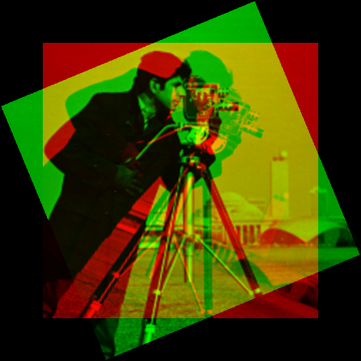
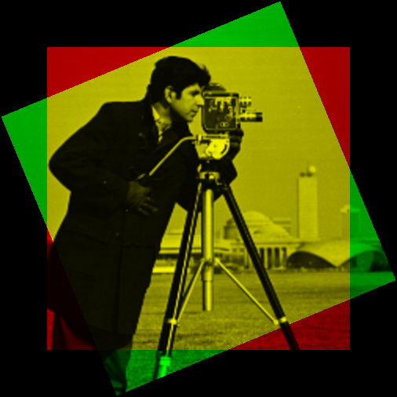
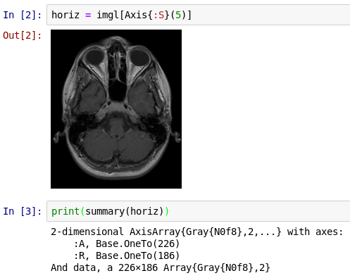

Arrays: more advanced indexing
In addition to the handling of numbers and colors, one of the main ways that JuliaImages leverages Julia is through a number of more sophisticated indexing operations. These are perhaps best illustrated with examples.
Keeping track of location with unconventional indices
Consider the following pair of images:
| imgref | img |
|---|---|
You might guess that the one on the right is a rotated version of the one on the left. But, what is the angle? Is there also a translation?
A "low tech" way to test this is to rotate and shift the image on the right until it seems aligned with the one on the left. We could overlay the two images (Using colorview to make color overlays) to see how well we're doing.
julia> using Images, CoordinateTransformations
julia> tfm = recenter(RotMatrix(pi/8), center(img))
AffineMap([0.92388 -0.382683; 0.382683 0.92388], [88.7786, -59.3199])
julia> imgrot = warp(img, tfm);
julia> summary(img)
"386×386 Array{Gray{N0f8},2} with eltype Gray{Normed{UInt8,8}}"
julia> summary(imgrot)
"OffsetArray(::Array{Gray{N0f8},2}, -59:446, -59:446) with eltype Gray{Normed{UInt8,8}} with indices -59:446×-59:446"While img has axes that start with the conventional 1, the summary of imgrot reports that it has axes (-59:446, -59:446). This means that the first element of imgrot is indexed with imgrot[-59,-59] and the last element with imgrot[446,446].
What is the meaning of these indices that extend beyond those of the original array in both directions? Displaying the rotated image–-especially when overlaid on the original–-reveals why:
julia> imgov = colorview(RGB, paddedviews(0, img, imgrot, zeroarray)...)
The padding on all sides of the array leaves space for the fact that the rotated image (green) contains some pixels out of the region covered by the original image (red). The fact that Julia allows these indices to be negative means that we have no trouble adding appropriate "padding" to the original image: we just copy the original over to the padded array, using its original indices.
We can test whether imgrot aligns well with the original unrotated image imgref at the top of this page:
julia> imgov_ref = colorview(RGB, paddedviews(0, imgref, imgrot, zeroarray)...)
The fact that the overlapping portion looks yellow–-the combination of red and green–-indicates that we have perfect alignment.
You can learn more about Julia's support for arbitrary indices in this blog post.
Keeping track of orientation with named axes
Suppose you are presented with a 3-dimensional grayscale image. Is this a movie (2d over time), or a 3d image (x, y, and z)? In such situations, one of the best ways to keep yourself oriented is by naming the axes. The TestImages package contains an example of a file that illustrates this:
julia> using Images, TestImages
julia> img = testimage("mri");
julia> println(summary(img))
3-dimensional AxisArray{Gray{N0f8},3,...} with axes:
:P, 0:1:225
:R, 0:1:185
:S, 0:5:130
And data, a 226×186×27 Array{Gray{N0f8},3} with eltype Gray{Normed{UInt8,8}}TestImages uses the AxisArrays package to name the axes of this particular image in terms of the RAS coordinate system (Right, Anterior, Superior) as commonly used in magnetic resonance imaging. See the documentation for that package to learn more about how you can create your own AxisArray objects.
We can use this coordinate system to help with visualization. Let's look at a "horizontal slice," one perpendicular to the superior-inferior axis (i.e., a slice with constant S value):

From the summary you can see that the slice has just the :A and :R axes remaining.
We could slice along the R and A axes too, although for this image (which is sampled very anisotropically) they are not as informative.
The ImageAxes and ImageMetadata packages add additional functionality to AxisArrays that may be useful when you need to encode more information about your image.